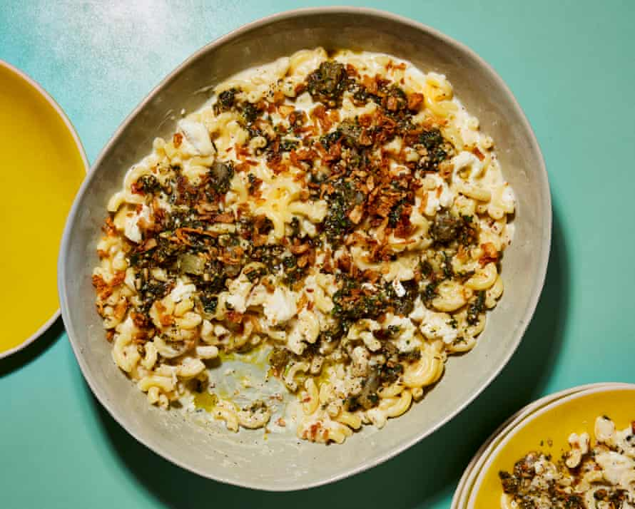

Middle Eastern mac’n’cheese with za’atar pesto

This recipe is a Middle Eastern take on a mac’n’cheese, thanks to the addition of cumin, a herbaceous za’atar pesto and crispy fried onions. Cooking the macaroni in the milk, as we do here, bypasses the need to make a bechamel. The starches are released into the soon-to-be-cheesy sauce, making it velvety and rich without the need for the more traditional flour-butter roux. To make the crispy onions, finely slice a couple of onions into thin rounds, toss with two tablespoons of cornflour, then fry in hot vegetable oil in about three batches, for four minutes per batch, or until golden.
For the za’atar pesto
Put the pasta, 600ml of milk, 350ml of water, the butter, garlic, turmeric, one teaspoon of salt and a good grind of pepper into a large saute pan on a medium-high heat. Bring to a simmer, then turn the heat down to medium and cook, stirring occasionally, for 10–14 minutes, or until the pasta is al dente and the sauce has thickened from the pasta starches (it will still be quite saucy). If using cavatappi, you might need to add the extra 100ml of milk at this stage, depending on how saucy you like your mac’n’cheese. Turn the heat to low and stir through the cumin, cream and both cheeses until the cheddar is nicely melted.
While the pasta is cooking, make the pesto. Finely grate the lemon to give you one and a half teaspoons of zest. Then use a sharp knife to peel and segment the lemon and roughly chop the segments. Place in a bowl with the lemon zest and set aside. Put the za’atar, coriander, garlic, pine nuts, one eighth of a teaspoon of salt, a good grind of pepper and half the oil into a food processor and pulse a few times until you have a coarse paste. Add to the chopped lemon in the bowl and stir in the remaining oil.
Transfer the mac’n’cheese to a large platter with a lip or a shallow bowl, dot all over with the pesto, and top with the crispy onions.
Make it your own Play with different cheeses and spices; use alternative pasta shapes such as macaroni, adjusting liquid levels as necessary.